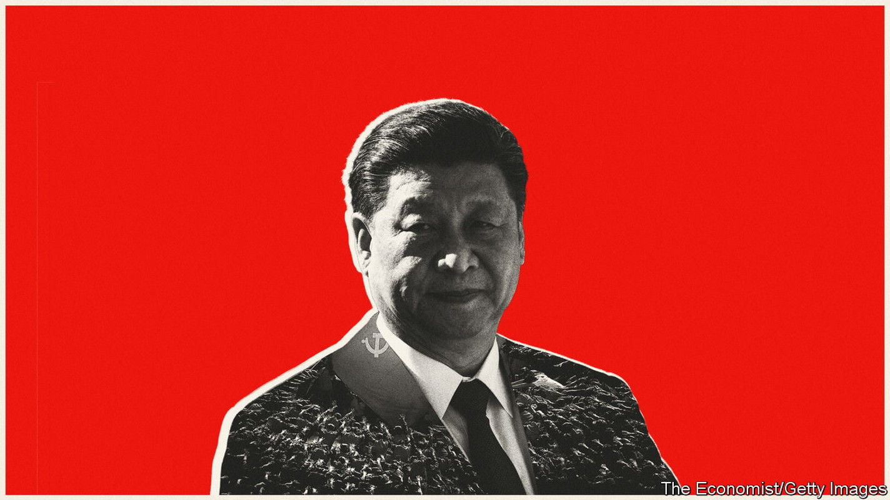

An investigation into what has shaped Xi Jinping’s thinking
A new podcast series explores what lies behind the Chinese leader’s power

Just over ten years ago, Xi Jinping disappeared. He was then China’s leader-in-waiting, about to acquire a slew of titles that would make him arguably the most powerful man on Earth. Without explanation, his aides cancelled meetings with foreign dignitaries, including America’s then secretary of state, Hillary Clinton. Western analysts were baffled.
Listen to this story.Enjoy more audio and podcasts on iOS or Android.
Listen to this story
Save time by listening to our audio articles as you multitask
Outside observers are acutely sensitive to such absences. Over the past few days a prolonged stretch with no public sightings of Mr Xi again triggered wild rumours about his political welfare: on September 27th he put paid to them by visiting an exhibition highlighting the Communist Party’s achievements under his rule. But in 2012 those withdrawals from diplomatic appointments felt different. It was two weeks before Mr Xi resurfaced. To this day analysts wonder about what happened then and what it meant.
Speculation about why Mr Xi went dark has ranged from a health problem to an assassination attempt. Chris Johnson had recently left the cia, where he had worked as a China analyst. He thinks it was probably Mr Xi’s riposte to Communist Party elders who—while backing his rise to the top—had bristled at his eagerness for power unfettered by their opinions. “Find someone else to take the job, then,” Mr Johnson imagines Mr Xi as having told them. “It was a good opportunity for him to show, ‘I’m not going to be dictated to by any retired person’,” reckons the ex-spook. Mr Xi wanted to be “not just the first among equals, but just plain first.”
If that theory is correct, Mr Xi got his way. He has shown more might and ruthlessness than any leader since Mao Zedong, who died in 1976. The Economist is this week releasing an eight-part podcast, called “The Prince”, to examine Mr Xi’s rise.
He has conducted sweeping purges of the party and security forces to remove the corrupt and political enemies (including many allies of those elders). He has turned a fractured party that had disappeared from many ordinary people’s lives into an omnipresent, ideologically re-charged, tech-enabled machine. He has crushed dissent: wiping out much of civil society, building a gulag for Muslims in Xinjiang and gutting Hong Kong’s freedoms.
Mr Xi has turned sand banks in the South China Sea into fortresses, threatened Taiwan with military exercises near the island’s coast and increased the deployment of nukes to keep America at bay. He has beefed up China’s global power, using its economic heft in a battle for political influence with the West, which he scoffs at as being chaotic and in decline.
On October 16th the party will convene a five-yearly congress. It will last about a week and will reshuffle a broad swathe of the ruling elite. The new group will then meet to choose the core leadership for the next half-decade. It is almost certain that Mr Xi will be reappointed as party leader and military chief, and that he will be reconfirmed as president early next year. This will be unprecedented in the post-Mao era. The norm for these posts has been a maximum of two five-year terms. Mr Xi, it appears, has decided to be ruler for as long as he wants.
The past ten years have revealed a lot about his thinking. But as tensions grow with America, not least over Taiwan, studying his character has become an ever more pressing task. Could he be another Vladimir Putin, willing to take enormous risks to secure his territorial ambitions? How much does it matter to him if China and the West part company? Is he animated by a Marxist spirit that will upend the post-Mao economic order? Will he allow an obsession with preventing the spread of covid-19 to cripple one of the world’s biggest engines of economic growth?
Over the past few months The Economist has spoken to a wide range of people with insights into Mr Xi’s personality, from former officials in the West to Chinese familiar with the secretive world of their country’s elite and the influences that may have shaped Mr Xi’s political preferences as he rose to power. Some of their observations are quoted in this article. Audio extracts can be heard in The Economist’s podcast series by one of this newspaper’s writers on China, Sue-Lin Wong. It is now available, in full, online and on all major podcast apps.
The conclusions of this series have grim implications for China and the world. When Mr Xi assumed power in 2012 some observers were cautiously optimistic that he would turn out to be some kind of reformer: not another Mikhail Gorbachev, but at least someone who would rule with a lighter touch and try to get along with the United States and the West. Those hopes were dashed as it became evident that Mr Xi was determined to amass immense power, wield it ruthlessly against his own and the party’s critics, and use it to turn China into a global power of which the West would be in awe. The personal attributes that set Mr Xi on this path will keep driving him along it. So will the forces around him: a nationalistic elite, a party ever fearful of losing its grip and a public that welcomes a strongman.
Those optimists a decade ago included Chinese people familiar with the party’s inner workings. One of them was Li Rui, who had served as a deputy minister and as Mao’s personal secretary in the 1950s, had later spent nine years in jail for criticising Mao and who had been restored to high office in the 1980s under Deng Xiaoping. After his retirement he remained an outspoken advocate of economic and political reforms until his death in 2019. “Once Xi Jinping became the number one, my father was so happy,” recalls his daughter, Nanyang Li, who now lives in America. “My father told me, now is good…we have hope for our political system.”
Mr Li should have been well placed to judge. In 1982-84 he served in a crucial role as a deputy chief of the party’s Organisation Department, an agency that manages China’s vast bureaucracy and helps select officials for promotion. He was tasked with setting up a new office within it called the Young Cadres Bureau. Its job was to identify and groom young officials who could become China’s future leaders. The bureau compiled a list of 1,100 of them. Of the 14 men who were appointed to the pinnacle of power—the Politburo Standing Committee—after the party congress in 2007 and the following one in 2012, all but two were on that list drawn up four decades before. Mr Xi, who became general secretary in 2012, was on it. Mr Li had sent a subordinate to investigate his suitability.
So why were he, and many others, so wrong in their guesses about how Mr Xi would turn out as China’s leader? There are two main reasons. First, assessments in 2012 of Mr Xi’s personality were based largely on his family ties. He was the son of Xi Zhongxun, a veteran of the revolution that brought the party to power in 1949. The elder Mr Xi, who died in 2002, had been purged by Mao and rehabilitated by Deng. He was an economic reformer who, under Deng, oversaw the creation of China’s first “special economic zone”—what is now the dynamic megacity of Shenzhen. That experiment in capitalism had made the party’s conservatives squirm (some hardliners refused even to go there). Like father, like son, is a common feature of Chinese political culture. Many expected that the son of such a reformist pioneer would be of similar kind.
Mrs Xi’s the one
The other reason was a dearth of information. Before Mr Xi emerged as leader-in-waiting in 2007, he had kept his head down. His wife, Peng Liyuan (pictured), was a singer of patriotic folk ballads and opera songs and far more famous than he (she has ten albums on Spotify). After the Chinese army crushed the Tiananmen Square protests in 1989, she had performed on the square for the troops.
Mr Xi was a little-known politician who had neither said nor done anything striking. Unusually for a leader-in-the-making, he had spent 17 years in one province—Fujian on the south-eastern coast—before getting his first job as a provincial party chief in 2002 in neighbouring Zhejiang. Alfred Wu was a journalist for state media in Fujian who was assigned to cover Mr Xi’s activities. It was a dull job. “He was very quiet and a little bit timid,” says Mr Wu, who is now at the National University of Singapore. “People never imagined that he will become the national leader.”
In 2011, the year before Mr Xi took power, Joe Biden—then America’s vice-president under Barack Obama—went to China to meet Mr Xi, who by then was vice-president of his country, too (a clear sign that he had risen to become heir apparent). Mr Biden was accompanied by Evan Medeiros, who was the National Security Council’s China director. There was “very little that we knew” about Mr Xi, recalls Mr Medeiros. Mr Biden tried to build a rapport with China’s future leader: they awkwardly played a little basketball together during a visit to a school. Mr Xi came across as a “very controlled and very careful politician”, says Mr Medeiros.
Not much has changed. Since taking over, Mr Xi has given no face-to-face interviews to Western journalists, nor held any press conferences except brief ones alongside foreign leaders during state visits. His speeches often are not released until long after they are delivered (for example, one that discussed the Soviet Union’s collapse and the “extremely great risks and challenges” involved in keeping the Chinese Communist Party in power into the distant future was published on September 15th, well over four years after he gave it). Unlike Mr Putin, he does not give rambling monologues on state television. While extending China’s power globally, Mr Xi has kept himself cloaked in mystery. His recent disappearance from public view followed a trip to Central Asia that was his first abroad since covid-19 was declared a pandemic.
Mr Biden’s visit to China in 2011 did provide a glimmer of insight. Daniel Russel, who was Mr Medeiros’s boss in the White House, recalls a dinner at which Mr Xi “talked at some considerable length” about the upheavals that had been toppling authoritarian leaders in Arab countries that year. Mr Xi mused on what might have caused these events: he pointed to corruption, factionalism within ruling parties and leaders’ loss of touch with ordinary citizens and their needs. The same things could topple the Communist Party if it failed to get its act together, Mr Russel recalls him saying.
Perhaps the biggest mistake made by observers at the time was underestimating how much Mr Xi was driven by a fear of the party’s collapse, how far he would go to prevent it, and how widely shared his concerns were within the ruling elite. Much of Mr Xi’s behaviour as leader, including his chest-thumping nationalism, can be explained as a response to the anxieties he conveyed to Mr Biden in 2011.
He was right to sense danger. China had been changing dramatically in the few years previously. A large home-owning middle class had emerged within the previous decade or two. With the rapid growth of private enterprise, the party’s grassroots presence had withered: by then most urbanites felt little connection with it. Social media had just emerged as a tool for communication; smartphone ownership was surging. Across China people were using these technologies to share grievances. Small ngos were springing up, championing the rights of the downtrodden.
And splits were emerging in the party. A rival to Mr Xi, Bo Xilai, was vying for attention in the south-western region of Chongqing, where he was party chief. Mr Bo—charismatic and good-looking—was winning public support by ostentatiously fighting corruption and appealing to lingering nostalgia for the supposedly fairer days of Mao, when the state provided housing and health care for urbanites.
Mr Bo, a member of the Politburo, was arrested for corruption and abuse of power early in 2012. After Mr Xi took over, months later, he put Mr Bo on trial. He was sentenced in 2013 to life in jail. Officials suggested that he had plotted a coup. Several others, including China’s former security overlord, Zhou Yongkang, and two retired generals, were accused of being in cahoots. Assets worth more than $14bn were seized from Mr Zhou’s family and associates.
Many analysts were surprised by Mr Xi’s ability to topple such powerful people. Mr Zhou had held the highest rank of anyone convicted of corruption since 1949. The generals had served as the most senior uniformed officers in the party commission that controls the armed forces. The trial of Mr Bo and the round-up of these men in the first three years of Mr Xi’s rule was a political drama rivalling that of the arrest in 1976, soon after Mao’s death, of the Gang of Four—the ultra-radicals who had orchestrated Mao’s vicious Cultural Revolution.
The purge was enabled by two crucial features of Mr Xi’s power and personality. The first is the support he enjoyed within the elite. The West saw a country that had weathered the storm of the global financial crisis of 2007-09 and was rising fast. Inside China, however, party insiders were less optimistic. They privately criticised Mr Xi’s lacklustre predecessor, Hu Jintao, for having let the country drift and the party lose its discipline. For the party to survive, they believed, it was essential to inject it with a renewed sense of purpose, and to tighten control over it. Mr Xi’s talk of a “Chinese dream” of the country’s “great rejuvenation” struck a chord with many.
Redder than red
The other asset that Mr Xi enjoyed was his pedigree. In China, Mr Xi is known (in whispers) as a taizi, or princeling. The word is most commonly applied to the offspring of leaders, especially the children of Communist China’s founders. Members of this group enjoy political advantage. Among the first 600 or so promising young officials identified by the Young Cadres Bureau in the early 1980s, about 5% were princelings. In the Politburo Standing Committee that Mr Xi took charge of in 2012, the majority were.
Our podcast series is called “The Prince”, the title of Niccolo Machiavelli’s work on how to be a ruler. As Machiavelli wrote, some 500 years ago, “Hereditary states…are maintained with far less difficulty than new states, since all that is required is that the Prince shall not depart from the usages of his ancestors.” Mr Xi may disagree with how easy that makes it sound (Machiavelli himself might have written differently about a colossus such as China). But the Chinese president clearly believes that preserving the party’s traditional ideological rhetoric—no matter how out of keeping with many aspects of today’s state-led capitalism—is vital for keeping its 97m members in lockstep and himself in charge.
In 2009 the American embassy in Beijing sent a classified cable to Washington (later published by Wikileaks) about the assessment of one unnamed—but clearly trusted—Chinese academic who had known Mr Xi early in the Chinese leader’s career. “Our contact is convinced that Xi has a genuine sense of ‘entitlement’, believing that members of his generation are the ‘legitimate heirs’ to the revolutionary achievements of their parents and therefore ‘deserve to rule China’,” said the dispatch. Mr Xi was not driven by ideology, it quoted the scholar as saying, but had chosen to survive by “becoming redder than red”. By cloaking himself in communism, he would be seen by the party elite as a safe pair of hands.
In terms of how Mr Xi has chosen to craft his image, the contact proved more correct than the optimistic liberals. In the past few months officials around the country have been made to watch (yet another) film about the collapse of the Soviet Union in 1991. The documentary points to a big lesson: that the giants of communism’s past must not be criticised. Attacking Stalin, as the Soviet leader Nikita Khrushchev did in 1956, sowed the seeds of ruin.
Mr Xi is no Maoist. He wants to bring private entrepreneurs to heel but not eliminate them, as Mao did—their contribution to the economy is too valuable to be dispensed with. Unlike Mao, who was happy to wreck party structures in pursuit of Utopian goals, Mr Xi wants to strengthen the country’s political and economic framework, keeping the party firmly in control.
To Mr Xi, the party as an institution matters more than it did to Mao. During the Cultural Revolution, Mao tried to purge his critics by unleashing the Red Guards—spontaneously formed gangs of radicals, independent of the party. In many places they seized local power, attacking party officials and party organisations for being “reactionary”, or insufficiently Maoist. Mr Xi’s family was among those targeted. His father was tortured. His half-sister killed herself to avoid similar treatment.
That experience may have bolstered Mr Xi’s belief in a strong party. It needed beefing up to prevent chaos like that again. Giving freer rein to the masses was dangerous. “What I see is not just the superficial things: the power, the flowers, the glory, the applause,” said Mr Xi in 2000. “I see the cow sheds”—meaning Red Guard detention houses—“and how people can blow hot and cold.”
Few people dare to blow cold about Mr Xi—those who have done so have been jailed or otherwise punished. He has used the party as his weapon, injecting party committees into private firms and reviving them in neighbourhoods. Party cells have been leading the mass mobilisation of people to enforce covid-related lockdowns, round up virus-carriers and put them in supervised quarantine, and conduct endless nucleic-acid tests and door-to-door inspections. In Xinjiang party secretaries were given the final say over who would be sent to detention camps for “deradicalisation”. Mr Xi has created new party groups, often with himself in charge, to oversee the work of government ministries. As he puts it: “East, west, south, north and centre—the party leads everything.”
As does Mr Xi. He is in charge of all of the government’s main portfolios, including economic policy, which previous general secretaries had put in the hands of the prime minister. After next month’s party congress, when the new leadership line-up is revealed, much attention will be paid to the unprecedented third term as general secretary that he will almost certainly be granted. But given the power he has, he had always been likely to remain paramount leader even if he had decided to give the job of party chief to someone else. Even Deng, who tried to introduce a more orderly system of succession, wielded ultimate authority years after stepping down.
Mr Xi, who is 69, is therefore likely to rule, formally or informally, for as long as he is fit enough to do so. He could, conceivably, be toppled, but that would be difficult in the high-tech surveillance state he has created. In his remaining years, little is likely to change in China or abroad to the extent that he would decide not to rule with an iron fist or challenge America.
Yet Mr Xi remains haunted by the fate of the Soviet Union and still sees enemies at home. Despite what appears to be strong public approval of his rule, he has reason to worry. In the past couple of years he has been waging war against a “political faction” in the police. Officials say it was posing a “serious threat to political security”. In the past few days the alleged ringleader, Sun Lijun, who had served as a deputy minister of public security, was given a suspended death sentence that could be commuted to life in prison without parole. Several others were given lengthy jail terms.
A new helmsman
As the economy slows, the public’s support may ebb. Mr Xi will be even more inclined to clamp down on dissent, and will become even more suspicious of private businesspeople in charge of giant firms who might challenge his policies. He has identified himself personally with China’s “zero-covid” strategy. Despite its heavy drag on the economy, and ever louder grumbling from citizens affected by draconian lockdowns, he is unlikely to abandon it until he is sure that doing so will not lead to a surge in deaths. But as a nationalist he is unlikely to hasten use of foreign vaccines that would enable China to make a swifter exit.
Abroad, Mr Xi will remain just as determined to chip away at American power in China’s neighbourhood and beyond. He sees a growing threat from America, as it tries to strengthen bonds with democratic countries to counter Chinese influence and to sever Chinese access to cutting-edge technologies. It is not known what he truly thinks of the war in Ukraine, but he will continue to back Russia diplomatically, seeing it as a vital bulwark of authoritarianism. Taiwan should continue to worry. Mr Xi has not shown signs of being a reckless risk-taker like Mr Putin. Especially given Mr Biden’s repeated suggestions that America would defend Taiwan militarily, he cannot be sure of swift victory should he decide to try to conquer it (a bigger challenge in some ways than subduing Ukraine, given its terrain and distance from the mainland). But taking Taiwan remains a stated party goal. Mr Xi is rapidly building up the hardware needed to do so.
Optimists may pin hope on change for the better in China when Mr Xi eventually passes from the political scene. They may be proved right. More liberal-minded leaders have occasionally risen in Communist China, though never to the apex of power. But the broader political elite that helped Mr Xi’s rise—including retired leaders, generals and the princelings—may prefer to keep China on much the same political track after he is gone.
As Mr Xi puts it, China is experiencing “changes not seen in 100 years” at home and globally. Amid such uncertainties, most of the ruling elite would probably like a firm hand on the tiller—another “helmsman”, as fawning officials are beginning to call Mr Xi—just as they appreciated Deng’s decision to send the army into Tiananmen Square. Despite his larger-than-life, domineering personality and rule-changing ways, Mr Xi represents continuity in Chinese politics as much as change. Even imagining a China without him, it is hard to be sanguine. ■